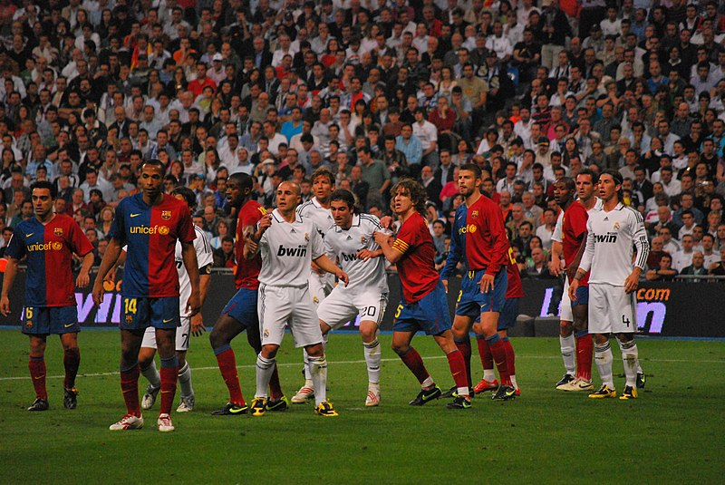

El clásico español, conocido entre los medios de comunicación y los aficionados como «El Clásico», es el
partido de fútbol que enfrenta al Real Madrid Club de Fútbol y al Fútbol Club Barcelona.23 Su relevancia
ha crecido hasta convertirse en la rivalidad futbolística —y/o deportiva— más importante del ámbito español,
situándose también como el encuentro entre clubes más seguido mundialmente del citado deporte, con
aproximadamente 650 millones de espectadores de media entre 2012 y 2020,45 logrando colocarse entre los
tres acontecimientos deportivos más seguidos del mundo junto con la final de la Copa Mundial de fútbol de
Sudáfrica 2010 y de los Juegos Olímpicos de Pekín 2008 que llegaron a 700 y 600 millones de espectadores
respectivamente. También fue posicionado por la prestigiosa revista World Soccer en el primer puesto de los
"World Soccer’s 50 Greatest Derbies" como el clásico de fútbol más importante del mundo.6
Pese a que el término se ha establecido como el calificativo para dichos encuentros, cuando empezó a
utilizarse hacía referencia al encuentro que más veces se había repetido entre dos clubes españoles a nivel
nacional,n. 3 correspondiendo históricamente a los «enfrentamientos entre el Athletic Club y el Real Madrid
C. F.» quienes hasta el comienzo de la temporada 2011-12 se habían enfrentado 215 veces entre Liga y Copa.7
A partir de entonces, fue superado por los enfrentamientos entre el Fútbol Club Barcelona y el Real Madrid
Club de Fútbol, aunque bien es cierto que ya se le atribuía el calificativo a estos enfrentamientos desde
hacía tiempo atrás debido a que en los últimos años fueron los equipos con mejores registros y éxitos de
España.8 En los últimos años del siglo xx estos encuentros fueron denominados como el partido del siglo en
un énfasis de la prensa por dar aún más relevancia al enfrentamiento.9 En 2021 fue presentado por LaLiga un
logotipo e identidad visual propia del enfrentamiento para consolidar su imagen y reconocimiento a nivel
internacional.
Con el calificativo de «Viejo Clásico» se hace referencia a los enfrentamientos entre el Real Madrid Club de
Fútbol y el Athletic Club. Estos partidos fueron los más repetidos durante la historia del fútbol nacional
en España hasta la temporada 2011-12 en la que se habían enfrentado 215 veces entre el Campeonato Nacional
de Liga y el Campeonato de España de Copa.7 Es por ello que recibían el calificativo que hoy reciben los
enfrentamientos entre madrileños y barcelonistas, si bien se usa indistintamente para uno u otro según la
ocasión.18 Actualmente son el tercer partido más repetido, el segundo a nivel nacional con 242 partidos.n.
9
No en vano, dicha contienda sigue siendo el más repetido en la historia del Campeonato de España de Copa
—hoy Copa del Rey—, que es la competición más antigua del país. En ella se han enfrentado un total de 58
ocasiones, correspondiendo nueve de ellas a la final.19 En la Copa ambos guardan algunos de los mejores
registros históricos, como el de mayor número de victorias seguidas.n. 10 Ambos clubes fueron los
dominadores de esta competición en su nacimiento. Dichas circunstancias hacen que en ocasiones se observe
con nostalgia dichos encuentros históricos donde se disputaban la supremacía y poco dados en la
actualidad,20 pero que sin embargo aún guardan un gran interés.18
Curiosamente de dicha rivalidad deportiva nació el que es hoy otro de los grandes rivales del club
madrileño, el Club Atlético de Madrid tras nacer en 1903 como una sucursal madrileña del club bilbaíno bajo
el nombre de Athletic Club (Sucursal de Madrid).21 Además, dichos encuentros entre vascos y capitalinos
adquirieron con el paso del tiempo un aditivo más al salpicarle un cierto trasfondo extradeportivo como la
política,22 debido a las posturas históricas del panorama español, aunque siempre tuvieron una relación de
respeto y deportividad unos con otros.2324
